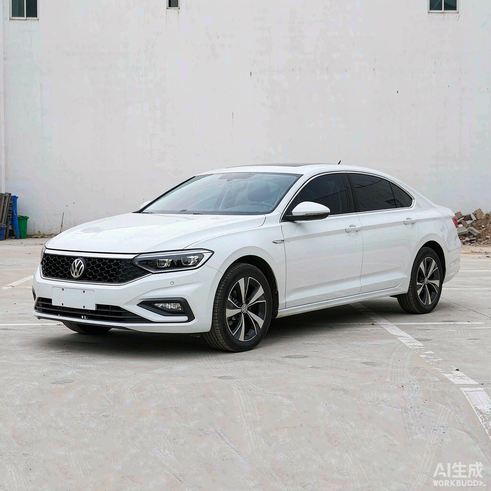
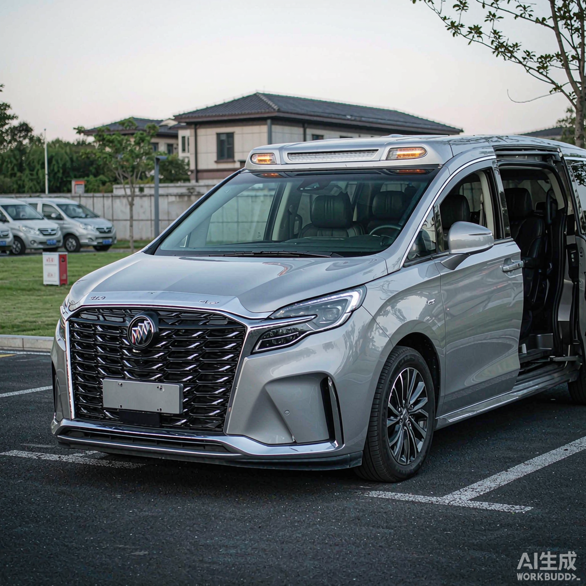
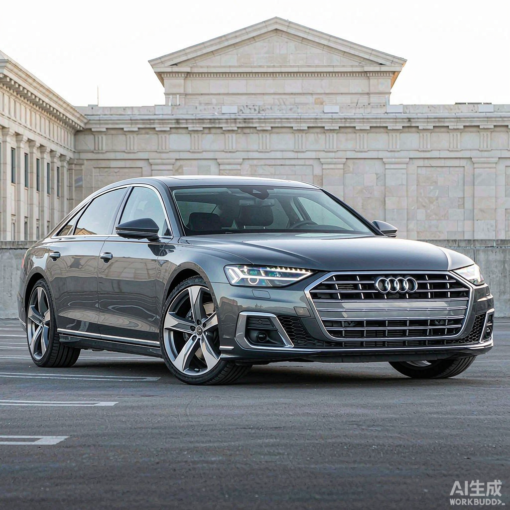

选择车辆
2
选择车辆
第 2 步 · 共 7 步
空闲：行程已结束，可选用
工作中：行程未结束
未绑定：未与您绑定
维保异常：维修/保养/停用，不可选
车辆列表

苏A·12345
空闲
正常
品牌型号：丰田 凯美瑞 2.5G
上一使用人：李四
上次使用结束：2024-05-19 17:30

苏A·23456
空闲
正常
品牌型号：大众 帕萨特 380TSI
上一使用人：王五
上次使用结束：2024-05-19 18:20

苏A·67890
空闲
保养中
品牌型号：别克 GL8 ES 陆尊
上一使用人：钱七
上次使用结束：2024-05-19 15:20

苏A·54321
工作中
维修中
品牌型号：奥迪 A6L 45 TFSI
上一使用人：赵六
上次使用结束：2024-05-19 16:40
苏A·88888
未绑定
停用
品牌型号：别克 GL8 ES
上一使用人：孙八
上次使用结束：2024-05-18 14:05
温馨提示
- 驾驶员仅可选择后台与您绑定的车辆
- 并且只能选择“空闲”状态、维保状态“正常”的车辆
- 维修中、保养中、停用的车辆暂不展示选用